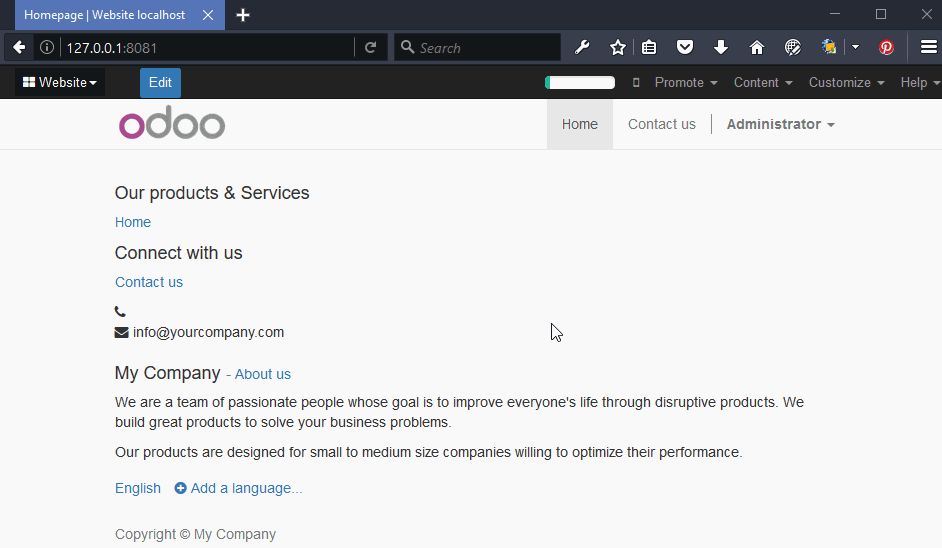

<section class="oe_container">
    <div class="oe_row oe_spaced">
        <h2 class="oe_slogan" style="color:#A24689;">Website no index</h2>
        <h3 class="oe_slogan">Add the possibility to deactivate website indexation by the search engines like Google and Bing.</h3>
        <div class="oe_demo oe_picture oe_screenshot">
            
		</div>
    </div>
</section>